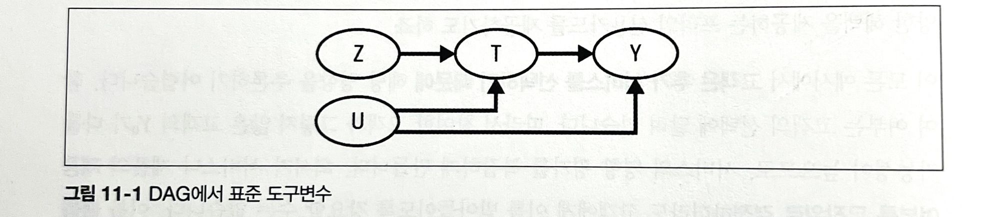
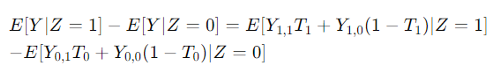
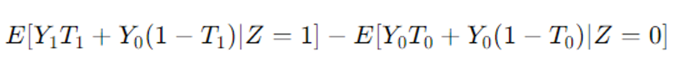
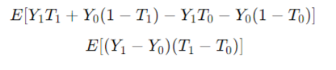
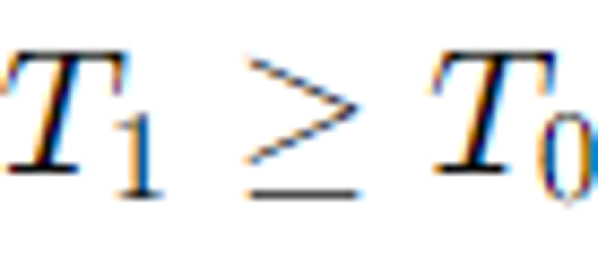
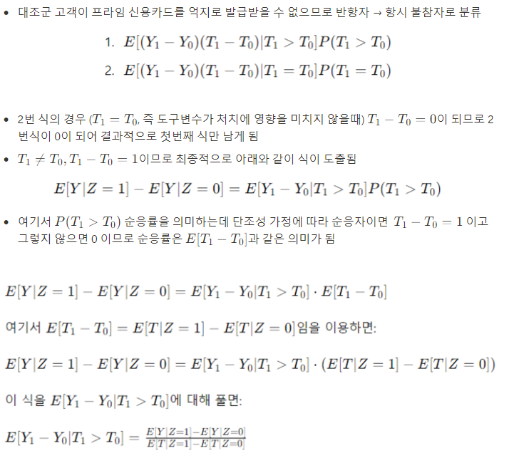

Chapter 11.1-11.6 불응과 도구변수#
작성자 : 하소희
개념#
불응#
요구나 요청에 응하지 않음
처치를 배정 받은 모든 사람이 처치 받지 않음을 의미
즉, 처치가 배정되었다고 처치가 반드시 적용되지 않을 수 있음을 의미
처치 여부를 무작위로 결정하더라도 고객이 이를 선택할 수 있는 상황에서 발생
도구변수#
불응과 같은 문제에서 처치가 결과에 미치는 인과 효과를 정확히 추정하기 위한 방법
도구변수는 처치와 관련이 있고 결과 변수와 직접적인 관련이 없어야 함
처치 배정과 처치 적용에 따른 4가지 그룹#
순응자: 자신에게 배정된 처치 받는 사람
항시 참여자: 배정과 관계 없이 항상 처치 받는 사람
항시 불참자: 배정과 관계없이 처치를 한 번도 받지 않은 사람
반항자: 배정된 처치와 반대되는 처치 받는 사람
불응 DAG#

Z : 도구변수
교란 없이 처치에 영향을 주고
처치를 거치지 않으면 결과에 영향을 미치지 않는 변수
T : 처치
Y : 결과
U : 교란요인
불응에서 처치에 따른 효과를 정확히 판단할 수 없음
: U를 통과하는 열린 뒷문 경로 때문에 처치가 Y에 미치는 영향을 제대로 식별할 수 없기 때문
열린 뒷문 경로 → 처치와 결과가 공통 원인을 공유하는 상황(U)
불응 예시#

Z : 프라임 신용카드 이용 가능 여부(무작위배정)
T : 프라임 카드 보유 여부
Y : 구매금액
U : 교란요인
ITTE ↔ ATE 비교#
처치 의도 효과(ITTE)#
Z는 무작위로 배정되기 때문에(예시에서) 단순 선형회귀로 추정가능
✅그러나 ITTE가 처치효과와 같다고 말할 수 없음
✅실제 처치를 받지 않은 대상자가 포함되기 때문에, 처치의 실제 효과를 과소평가할 수 있음
✅중요한 건 카드 선택(처치 받은 대상자)에 따른 처치효과를 파악하는 것
ITTE ↔ ATE 차이#
ITTE: 모든 배정된 대상을 포함하므로 실제 효과를 과소평가할 수 있음
ATE: 실제로 처치를 받은 대상자만 포함하여 더 정확한 처치 효과를 반영
✅ 따라서, 불응이 발생하면(무작위 처치 배정과 상관없이) 처치를 받은 사람과 받지 않은 사람이 혼재되어 있기 때문에 ITTE 추정값이 처치의 실제 효과를 과소평가하게 됨
✅ ITTE 추정값은 ATE 추정값보다 0에 가깝게 편향됨(처치의 효과가 0에 가까워짐을 의미)
처치 선택에 따른 ATE 식별 불가#
불응 상태에서는 처치 선택이 무작위가 아니므로, 처치 받은 경우와 받지 않은 경우를 비교해도 ATE를 제대로 식별할 수 없음
✅ ITTE의 값은 대리 변수로 사용할 수 있지만, 처치의 실제 효과를 과소평가 하게 됨
✅ 처치 선택이 무작위가 아니기에 ATE를 제대로 식별할 수 없음
→ 추가적인 가정 필요
도구변수 식별 가정#

ITTE 에서 출발

1. 연관성#
도구변수가 처치변수에 영향을 미쳐야 함
2. 배제 제약#
처치 T를 통하지 않고는 Z에서 Y로 가는 경로가 없다는 가정
도구변수가 처치를 통해서만 결과에 영향을 미침
\(Y_z,_t = Y_t\)

3. 독립성#
Z와 T 그리고 Z와 Y 사이에 측정되지않은 교란요인이 없다고 가정
도구변수가 무작위로 배정된것처럼 작용

4. 단조성#
도구변수가 처치변수를 한 방향으로만 영향을 주는 것을 의미


참고
\(T_1>T_0\)인 값을 갖는 그룹은 순응자 밖에 없음
순응자(Complier) : 배정된 처치를 받는 사람들(T1=1, T0 = 0)
항시 참여자 (Always-taker): 도구변수와 상관없이 항상 처치를 받는 사람들 (T1=1, T0=1).
항시 불참자자 (Never-taker): 도구변수와 상관없이 처치를 받지 않는 사람들 (T1=0, T0=0).
반항자 (Defier): 도구변수의 할당과 반대로 행동하는 사람들 (T1=0, T0=1).
결과#
도구변수 실습#
1단계#
1단계 - 회귀: 처치 변수를 도구변수에 대해 회귀하는 단계 → 연관성 가정 확인 가능
도구변수와 관련된 매개변수 추정값이 크고 통계적으로 유의 → 해당 가정이 유효
Z → T 추정
2단계#
2단계 - 축약형 : 결과를 도구변수에 회귀하여 처치 의도 효과를 추정
Z → Y 추정
LATE = 2단계 추정값 / 1단계 추정값
2단계 최소제곱법#
개념
2단계에서 결과(Y)를 1단계에서 구한 T의 예측값(\(\hat{T}\))에 회귀하는 방법
장점
표준오차를 적절하게 계산할 수 있음
더 많은 도구변수와 공변량을 추가할 수 있음